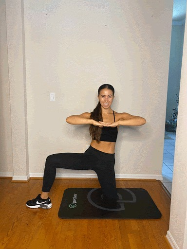

Aug 18, 2020
4 min read
facebook logo
twitter logo
twitter logo
copy link symbol
When you’re plagued with cramps, bloating and fatigue, the last thing you might want to do is work out. But studies show that exercise can be an optimal treatment for symptoms of premenstrual syndrome (PMS) and period pain. Movement during menstruation won’t just distract you from the discomfort; it can have some more concrete benefits such as decreased pain, soreness, cramping, and inflammation.
Luckily, that doesn’t mean you need to go hard in the gym or hit the pavement for a half marathon. Instead, look to movement that properly engages your muscles and nourishes the entire body—like the four moves below. Try these simple and effective moves to alleviate period symptoms when your period rolls around next. But first, let’s learn more about the brains and method behind the moves.
4 Exercises for Period Cramps:
1. Low back & glute stretch
The benefit: This move can help alleviate some of the tightness that may develop in your muscles from period cramping and bloating. Here, you’ll open up the outer hips, ribs, abdominals, and back.
The move: Start with the left foot flat, and right foot directly back from the hip at 6 o’clock. Plant the ball of the back foot like you’re wearing a stiletto heel and slightly bend the front knee. The left arm is going to reach straight out at shoulder height while the right arm reaches overhead. Sway the hips to the right as you reach up and out with the right hand. Repeat 6-8 times on both sides.
2. Kneeling abdominal twist
The benefit: Hip and pelvic opening stretches can feel great when you are feeling tightness and fullness in this area, which can occur if you experience heavy bleeding, cramping, or PMS.
The move: Kneel on the left leg with the right foot planted at 3 o’clock, externally rotated. Interlace the fingers at chest height, lift elbows, and pull the fingers apart to engage the back. Shift your weight into the right foot, finding a deeper bend in the right knee as you drive the left elbow toward the left and twist. Return to center by engaging the glute and driving the right elbow back to square the shoulders forward. Repeat 6-8 times on both sides.

3. Shift back arm rotation
The benefit: Ribs and abdominals can feel restricted as a result of bloating or abdominal cramping or pain. This move opens these areas to improve blood flow and help alleviate symptoms.
The move: This is a 4-part move targeting the middle spine and hips. On all 4’s, shift your weight back toward the heels, finding a deep hip hinge and engaging the glutes to return to center. Then, lift the right hand toward the ceiling and open your chest toward the right. Return to center and repeat the shift, alternating the arm lift and spinal rotation to the left side.
4. Glute bridge
The benefit: Bridging puts your body in a relatively inverted position. This can encourage blood flow away from the pelvis and lower abdomen where we feel pressure and fullness. It unweights the pelvic floor and can help reduce cramping and collected inflammation in the area. This is a gentle inversion that's only held for a short time - however, we always recommend you listen to your body and if this move is uncomfortable during your period you can always skip it.
The move: Lying down, bend the knees so both feet are planted flat on the floor about 6 inches from the glutes. Reach your fingertips toward your heels, engaging the upper back and opening the chest. Press into the feet and hover the pelvis 1-2 inches above your mat. Engage the glutes and press the pelvis toward the ceiling to find full range in the front of the hips and return to that hover. Repeat for 8-10 reps.